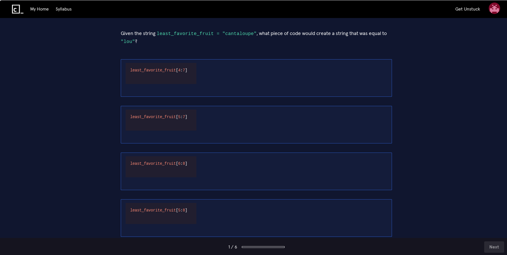
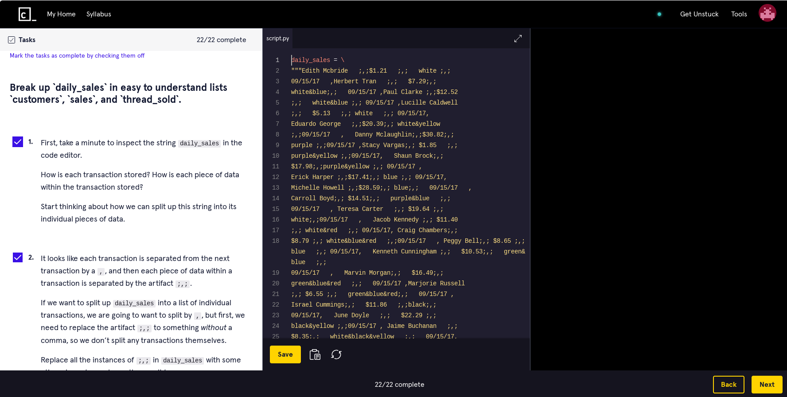
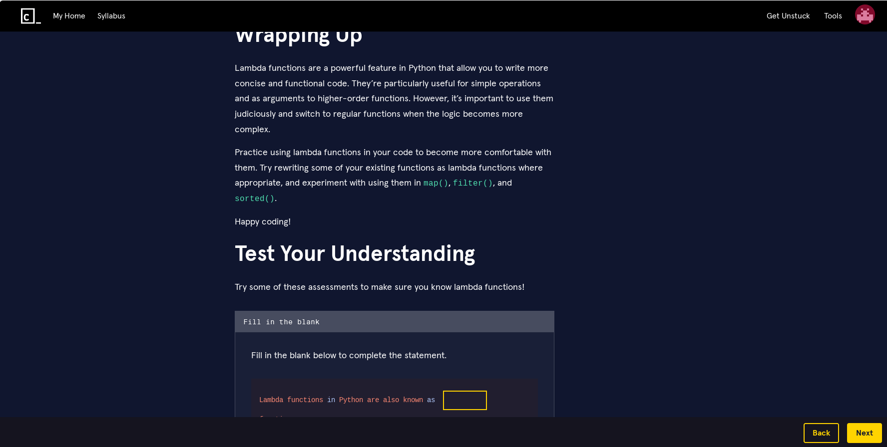
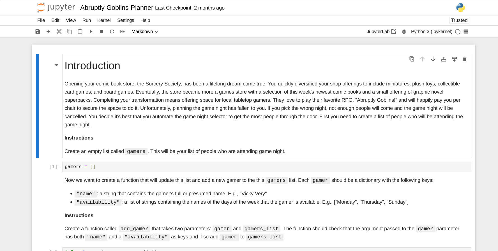
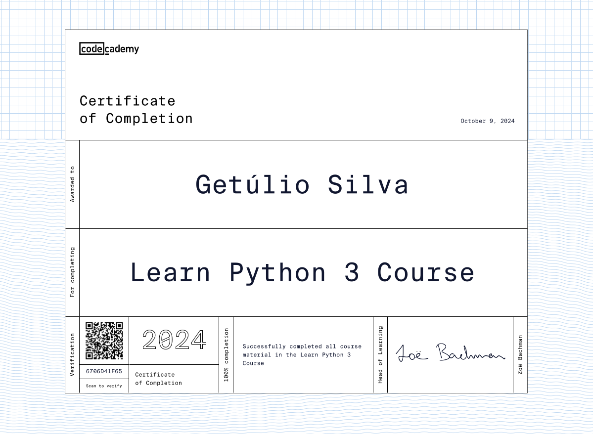

My review of the Learn Python 3 course from Codecademy
Summary
- Codecademy is an excellent website that offers interactive technology courses
- Codecademy has free courses but the best are paid
- Subscribing to Codecademy costs from $143.88 to $239.88
- Python is an easy and powerful language that can help you earn a lot of money
- Learn Python 3 is a good course to learn or remember basic concepts
- The website is not fully accessible and may crash sometimes
- You need to work hard to reach a professional level of skill
- Pay for Codecademy if you prefer to learn by doing, don't want to search for materials and/or are in a rush
- There are other learning materials that are high quality and free
Table of contents
How much does Codecademy cost?
About Codecademy's Learn Python 3
Introduction
Codecademy is a website with several interactive technology courses. The main focus is to teach languages, programming techniques and personal skills so that you can enter or grow in a technological career. The site offers courses on a wide variety of topics, from languages such as Python, JavaScript and Java, to cybersecurity, design and communication. What sets Codecademy apart from other learning mediums is the format. Most of the time is spent on a page with three parts:
- on the left: the learning material and instructions for the exercise to be done
- in the center: an interactive editor that allows you to write source code and a button to run the code
- on the right: the result of executing your code
Most lessons are very short and to the point, teaching you something meaningful in a short amount of time. You learn a concept, see some examples, and receive a task in the left pane. You write the code in the center panel to complete the task, click Run and see the result of your creation in the right panel. The system tells you immediately whether the result is right or wrong, and sometimes even describes what is wrong with your code. If you made a mistake, simply change the code and click Run again, allowing you to overcome obstacles quickly. After completing the task correctly, simply click Next to advance to the next lesson. Repeat this several times and you have a Codecademy course.
Much more time is spent applying what you learned, rather than observing an explanation (as in classes, videos and books, for example). With each completed lesson you feel a small sense of achievement that makes you want to do the next one. If at any point in your life, when playing a game, you said that you were going to stop playing when you finished the next level, only to look at the clock and realize that hours had passed without you noticing, you understand what I feel using Codecademy.
Unfortunately the site is only available in English. They recommend that you use a web browser capable of translating pages into another language, such as Google Chrome. Although there is a Codecademy mobile app, it does not have all the features, serving only to review what has already been learned. The full site can be used on phones and tablets, but there may be courses that ask you to install programs that only work on computers with Windows, MacOS, Linux and maybe Chrome OS operating systems. In my opinion, the best way to take the courses is using a desktop computer, with a Linux operating system and one or more large monitors.
How much does Codecademy cost?
Time to rush over to Codecademy and start learning, right? Well, despite the wide range of free courses, the best are paid, like Learn Python 3, which I will analyze further down. In December 2024, you can sign up for the following plans:
-
For businesses:
- From US$299 per year, per person.
-
For people:
- Plus Plan: US$14.99 per month (total US$179.88 per year), per person, or US$143.88 per year (difference of US$36 per year compared to the monthly payment), per person. Try this if you're only interested in the courses.
- Pro Plan: US$19.99 per month (total US$239.88 per year), per person, or US$191.88 per year (difference of US$48 per year compared to the monthly payment), per person. Try this if you want to take advantage of features that can help you enter or advance in a technological career.
Yes, it's a lot of money. If you're looking for a new job, you probably can't afford unnecessary expenses. These prices weigh even more heavily in a country with a currency that is devalued in relation to the US dollar. But don't worry, the site offers a series of discounts, such as 35% for students, 50% for those who receive social benefits in the USA or, for military personnel , first responders, health professionals or teachers, among others. These discounts may cease to exist and others may come into effect. You may also need to provide some information to prove that you are part of the group allowed to use the discount. So always check which ones apply to you and what the conditions are.
In addition to permanent discounts, promotions often appear that offer annual plans at half price, which is when I recommend you sign up. If you're still not convinced of the value of Codecademy, or can't spend the money, take a look at the end of this text, where I list free high-quality alternatives.
Why learn Python 3?
Python is a very well designed programming language that has evolved over many years. A Python program is similar to a common English text, which makes writing and reading easier, especially for beginners. Still, it's a powerful and very flexible language. You can create simple scripts to automate tedious tasks, develop complex web systems with Django, analyze datasets with pandas, develop games with Pygame and much more.
If at any point you have questions, it's easy to find information and people willing to help you, whether on the internet or in real life, because Python is used by many people and organizations.
Speaking of organizations, all those that use programs written in Python need people to develop and maintain their systems. Knowing Python can be the gateway to a career in technology and some jobs can pay you very well, with annual salaries exceeding US$100,000 in the USA. It's important to note that it's not easy to get these jobs, but learning Python is the beginning of the journey that can take you there. Even if you can only find work in other countries (which almost always pay less), you'll probably have a more comfortable life than most people.
About Codecademy's Learn Python 3
The course is aimed at beginners, and according to their description, takes 23 hours to complete. I have a degree in Information Systems, so I had prior exposure to the concepts. I didn't measure the time I spent, but I imagine it was around 30 hours. This is because I went much deeper than what's necessary to just complete the course. If this is your first experience with programming, don't be surprised if it takes you 50 hours or more to complete the course satisfactorily. If you already have extensive experience and only want to do the main activities, you might finish everything in just a day or two.
Don't feel bad if you can't advance as quickly as other people. Each of us does things differently and, with enough practice, we can reach or surpass the level of our peers. The important thing is to learn as much as possible throughout the process, and to do this it is important to take your time, pay attention, take notes if necessary and complete the tasks with as much dedication as possible.
Learning to program is difficult for most people. It's a constant exercise in dealing with frustration. You will always encounter inexplicable problems and will often have to solve them on your own. Don't give up. Knowing how to research, persist and invent creative solutions are part of the training process of anyone who wants to program well.
Having explored the more emotional part, what can you expect from the course in terms of activities? The course is divided into 13 modules and each module has around 6 activities. As I wrote in the introduction, most of the time is spent on a type of activity called Lesson, which is based on repeating a cycle of learning a concept, doing a challenge, analyzing the result and going to the next lesson, about 15 times. But there are several other activities such as:
- Quiz: multiple-choice quizzes with varied questions about the lessons, ranging from concepts, syntax (correct way to write code) to results of program execution. 
- Project: these are larger versions of normal lessons, with the difference that there is no automatic verification of the results of your work, it is up to you to carry out this verification. 
- Article: longer texts with small exercises and questions to test your understanding. 
- Informational: larger and more complex projects that use Jupyter Notebooks (files with interactive annotations). These activities teach you how to install Python and Jupyter Notebook on your computer. Perhaps these were the best parts of the course for me, as they were useful and fun at the same time. They also serve to calm Codecademy's critics, who claim that you never learn to use the knowledge in a real environment. 
A few videos are also included among the activities. This diversity of teaching methods kept my attention before I could get bored, making the experience more enjoyable. Note that there are two optional modules called Code Challenges. You don't need to complete these modules to finish the course, but I highly recommend that you do, to really test your new knowledge. Furthermore, you (or someone else) are paying a lot for access to the site, so it's better to make the most of every bit of the course to justify the expense, right?
I consider the content of this course to be good and quite complete for a first contact with the language, considering the site's purpose. It's necessary to continue your studies to reach a professional level of competence, but this material gives you a solid and broad base to expand later.
If you find an exercise difficult, you can use the assistance features. Some activities have tips on the tasks to be done, so you won't suffer unnecessarily. If you still have difficulty, you can read the cheatsheets (small summaries of the lessons), read the Docs (more complete texts), watch a video with the solution (only for some exercises), or simply see the solution. If even these resources are not enough, you can exchange messages with other people who have already completed or are taking the same course as you, in what they call a community. I didn't explore this community feature a lot, which is based on the Circle service (outside Codecademy). I found the interface a little confusing, despite being full of features. Give it a chance, maybe you'll end up meeting some cool people. Finally, there are AI assistants to help you solve and explain the exercises, which may be useful for some.
When you finish a module, you can start a module practice, which is a review of the contents of that module, to keep the knowledge fresh in your mind. When you finish all the modules, you can do practice sessions, which are reviews of all the course content. But one of the biggest rewards for completing the course is the certificate:
This certificate will not guarantee you a job, but it can help. The biggest use for me is the feeling of achievement.
Back to the topic of work, subscribing to one of the Pro plans gives you access to some features that can increase your employability, such as courses that teach you the skills needed for job interviews, questions commonly used in these interviews and AI-based assistants that can analyze your resume and simulate interviews.
The negatives
Even though I like the site experience so much, it has flaws. The first major omission I noticed was the interactive editor not accepting data input, that is, you cannot run a program that allows you to type something in the middle of the execution and process this information that was typed. An example would be a program that asks you what your name is, you type your name (let's assume it's Clara) and press the enter key, and then the program displays a message like "Hello Clara". This program cannot be used within the Codecademy interactive environment. Even though this limitation exists, Learn Python 3 has an article that teaches you how to do this operation in a real environment. To get around this problem, you can write the texts you want directly into the programs, and using these variables, run the programs without interruption.
Another important criticism that I already mentioned is that Codecademy's interactive environment simplifies and automates some things to facilitate learning, a situation very different from the real world, where sometimes just being able to install a programming language can be challenging. Despite considering these criticisms exaggerated, it is true that if you want to use technologies in a professional context, the courses won't teach you everything you need. You must be interested in learning some details on your own and honestly asking yourself whether you can really apply what you have learned in a real environment. If you put in the work, the information available is more than enough.
Codecademy is more accessible than many sites I know. Still, I identified some problems. Dark themes ("dark mode") are important for people sensitive to brightness and their presence has to be praised, as does the high contrast mode. Unfortunately I suffer from the opposite problem. When reading pages with light text and a dark background, even when I stop looking at the page, I continue to see the text in front of me for a few seconds, as if the image has been "burned" into my vision. The image below shows (in an exaggerated way) what I see:

{kind=link}
I have not been diagnosed, but what I feel corresponds to the description of the phenomenon called palinopsia. Trying to use dark themes causes me more fatigue than usual, decreasing my productivity. Codecademy allows you to disable the dark theme. The problem is that the normal theme is also predominantly dark, as you can see in the screenshots I took above. There is no completely clear theme, so if you have the same problems as me, take this into consideration. Another possible accessibility issue I found was in the Block Letters project of the Hello World module. It consists in creating ASCII art, which is basically making drawings using text on a computer.
{kind=link}
The problem with this activity is that, for people who are blind or have low vision, it can be difficult to understand or create this type of art, which can discourage them right at the beginning of the course.
Other minor annoyances were crashes that forced me to reload the page, keyboard shortcuts that sometimes stopped working, occasional slowdowns (Codecademy needs a good internet connection to work) and the feeling of using three different sites depending on the page I was accessing. Lastly, a very silly detail is the difficulty of creating an aesthetically pleasing certificate of completion. It's a little difficult to get the certificate centered and not cut off the edges.
Is Codecademy worth paying for?
I think it may or may not be worth it in the following cases:
- You prefer to learn something new by "doing" rather than watching someone else teach you for a long time, before applying the knowledge. If instead of an interactive course, you prefer other means such as face-to-face classes, videos or books, it's not worth it. But give it a try, you might change your mind.
- You have difficulty finding good study materials or you easily get lost along the way and are unable to finish what you started. You are looking for a complete study program and just want to finish it without getting distracted. You'll still have to work hard to stay focused, but I consider Codecademy a great option in these cases. Now, if you like to select each element of your study program, the order of materials and use several different sources, Codecademy may not be a good option for you, as the structure of the courses may seem tedious or limiting.
- You are in a hurry and want to learn or remember basic concepts without going too deep, using a single source. If you are looking for a complete reference, with everything you need to know about a subject, or a more "serious" reference, with academic rigor, Codecademy is not a good option for you.
Unless you have A LOT of money, I don't recommend subscribing to Codecademy right away. First take one of the 593 free courses like Learn HTML or Learn JavaScript. Some of the courses are only available to paying subscribers, but the main parts are free. Don't underestimate the usefulness of the free courses. Once I needed to create a program using the Ruby language to do a job interview. The problem is that I didn't know anything about the language, but by doing the free parts of the Learn Ruby course, I managed to learn enough to be in the top ten, against hundreds of other candidates. If after finishing a free course, you realize that you liked the format, look at the catalog and see if any paid material interests you. If so, start the 7-day free trial and during this period take as many courses as possible that interest you. If the paid material appeals to you, subscribe for a month, or if the quality really convinces you, subscribe for a year to save a little. Before subscribing, don't forget to check the promotions and whether you are entitled to any discounts.
Other learning resources
I haven't always been able to afford Codecademy, so I understand if that's your case. But when the desire to learn is big enough, any obstacle can be overcome. Fortunately, there are a plethora of high-quality learning resources that don't cost anything. Most are in English and have no translation. In the future I may publish another text with references in other languages, but know that today, to work in technology, learning English becomes essential. Below are some resources separated by category:
-
Books - the humble book is one of the oldest means of learning. With a high density of information, choosing the right books can give you an education comparable to the best universities in the world. They tend to be expensive, but you can take advantage of promotions, receive them as gifts, buy used copies, lend them and if all else fails, download PDFs from sites like Anna's Archive and Library Genesis. Some well-rated ones are:
- Automate the Boring Stuff with Python by Al Sweigart - free!
- Python Crash Course by Eric Matthes.
- Fluent Python by Luciano Ramalho.
-
Online courses - the experience of taking a subject at the most prestigious universities in the world, without leaving home and without spending a penny:
- HarvardX: CS50's Introduction to Programming with Python from Harvard University.
- Python Programming MOOC 2025 from University of Helsinki.
- MITx: Introduction to Computer Science and Programming Using Python from Massachusetts Institute of Technology.
-
Interactive courses - sites similar to Codecademy but with different propositions:
- freeCodeCamp - completely free. An excellent project with very high-quality materials. Similar to Codecademy but less refined. You'll have to work hard to complete the courses, but you will grow a lot in the process.
- The Odin Project - completely free. Very complete courses focused on web development with JavaScript and Ruby. The site often uses external references to guide you. If you are not afraid of a challenge and want solid training, check out this project.
- Scrimba - some free courses. This site is what I consider the future of the Codecademy concept. The courses are based on videos, but while a person explains the content, their actions are reproduced in an interactive editor, as if they were next to you, typing on your computer as they teach. You can go back and forth throughout the video and see the code changes or alter the programs however you want. Definitely worth a visit.
-
Internet tutorials - the original way of disseminating knowledge over the internet, that has already changed the lives of billions of people, including mine:
- The Python tutorial - The "official" Python tutorial. You'll always make a good choice if you use this reference. Available in multiple languages.
- W3Schools - a controversial site that had some problems but has improved a lot. What matters is that you learn and this site will definitely be able to teach you.
- Real Python - just like W3Schools, I often use this site to clarify a question or remember something quickly. And I almost always manage to find the answer I'm looking for, in a didactic way.
-
YouTube videos - an interesting way to use a site you already know, to learn. These are mere suggestions, do your own search and you will find thousands of options:
- Python Tutorial for Beginners by TechWorld with Nana.
- Python for Beginners by freeCodeCamp.
- Python RIGHT NOW!! by NetworkChuck.